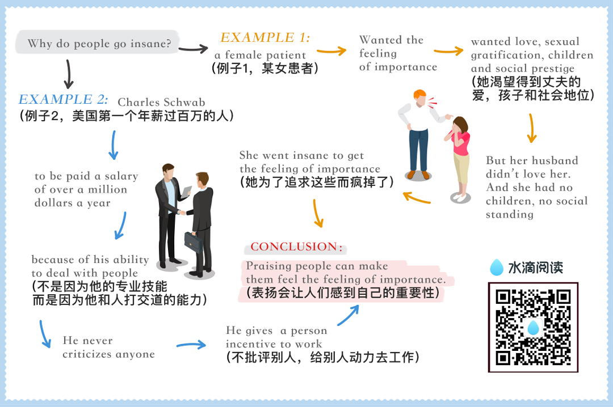

chapter2.2
People sometimes became invalids in order to win sympathy and attention, and get a feeling of importance.

For example, Mrs. McKinley, she got a feeling of importance by forcing her husband, the President of the United States, to neglect important affairs of state while he reclined on the bed beside her for hours at a time, his arm about her, soothing her to sleep.
She fed her gnawing desire for attention by insisting that he remain with her while she was having her teeth fixed, and once created a stormy scene when he had to leave her alone with the dentist while he kept an appointment with John Hay,his secretary of state.
The writer Mary Roberts Rinehart once told me of a bright, vigorous young woman who became an invalid in order to get a feeling of importance.
"One day," said Mrs. Rinehart, "this woman had been obliged to face something, her age perhaps.
The lonely years were stretching ahead and there was little left for her to anticipate.
She took to her bed; and for ten years her old mother traveled to thethird floor and back, carrying trays, nursing her.
Then one day the old mother, wearywith service, lay down and died.
For some weeks, the invalid languished; then she got up, put on her clothing, and resumed living again."
Some authorities declare that people may actually go insane in order to find, in the dreamland of insanity, the feeling of importance that has been denied them in the harsh world of reality.
There are more patients suffering from mental diseases in the United States than from all other diseases combined.
What is the cause of insanity?
Nobody can answer such a sweeping question, but we know that certain diseases, such as syphilis, break down and destroy the brain cells and result in insanity.
In fact, about one-half of all mental diseases can be attributed to such physical causes as brain lesions, alcohol, toxins and injuries.
But the other half—and this is the appalling part of the story—the other half of the people who go insane apparently have nothing organically wrong with their brain cells.
In post-mortem examinations, when their brain tissues are studied underthe highest-powered microscopes, these tissues are found to be apparently just as healthy as yours and mine.
Why do these people go insane?
I put that question to the head physician of one of our most important psychiatric hospitals.
This doctor, who has received the highest honors and the most coveted awards for his knowledge of this subject, told me frankly that he didn't know why people went insane.
Nobody knows for sure.
But he did say that many people who go insane find in insanity a feeling of importance that they were unable to achieve in the world of reality.
Then he told me this story: "I have a patient right now whose marriage proved to be a tragedy.
She wanted love, sexual gratification, children and social prestige, but life blasted all her hopes.
Her husband didn't love her.
He refused even to eat with her andforced her to serve his meals in his room upstairs.
She had no children, no social standing.
She went insane; and, in her imagination, she divorced her husband and resumed her maiden name.
She now believes she has married into English aristocracy, and she insists on being called Lady Smith.
"And as for children, she imagines now that she has had a new child every night.
Each time I call on her she says: 'Doctor, I had a baby last night.'
Life once wrecked all her dream ships on the sharp rocks of reality; but in the sunny, fantasy isles of insanity, all her barkentines race into port with canvas billowing and winds singing through the masts.
Tragic? Oh, I don't know.
Her physician said to me: If I could stretch out my hand and restore hersanity, I wouldn't do it.
She's much happier as she is."
If some people are so hungry for a feeling of importance that they actually go insane to get it, imagine what miracle you and I can achieve by giving people honest appreciationthis side of insanity.
One of the first people in American business to be paid a salary of overa million dollars a year (when there was no income tax and a person earning fifty dollars a week was considered well off) was Charles Schwab,
He had been picked by Andrew Carnegie to become the first president of the newly formed United States Steel Company in 1921, when Schwab was only thirty-eight years old.
(Schwab later left U.S. Steel to takeover the then-troubled Bethlehem Steel Company, and he rebuilt it into one of the most profitable companies in America.)
Why did Andrew Carnegie pay a million dollars a year, or more than three thousand dollars a day, to Charles Schwab?
Why? Because Schwab was a genius?
No. Because he knew more about the manufacture of steel than other people? Nonsense.
Charles Schwab told me himself that he had many men working for him who knew more about the manufacture of steel than he did.
Schwab says that he was paid this salary largely because of his ability to deal with people.
I asked him how he did it.
Here is his secret set down in his own words—
words that ought to be cast in eternal bronze and hung in every home and school, every shop and office in the land—
words that children ought to memorize instead of wasting their time memorizing the conjugation of Latin verbs or the amount of the annual rainfall in Brazil—
words that will all but transform yourlife and mine if we will only live them:
"I consider my ability to arouse enthusiasm among my people," saidSchwab,
"the greatest asset I possess, and the way to develop the best that is in a person is by appreciation and encouragement.
"There is nothing else that so kills the ambitions of a person as criticisms from superiors.
I never criticize anyone.
I believe in giving a person incentive to work.
So I am anxious to praise but loath to find fault.
If I like anything, I am hearty in my approbation and lavish in my praise."
That is what Schwab did. But what do average people do?
The exact opposite. If they don't likea thing, they bawl out their subordinates; if they do like it, they say nothing.
"In my wide association in life, meeting with many and great peoplein various parts of the world," Schwab declared,
"I have yet to find the person, however great or exalted his station,who did not do better work and put forth greater effort under a spirit of approval than he would ever do under a spirit of criticism."
That he said, frankly, was one of the outstanding reasons for the phenomenal success of Andrew Carnegie.
Carnegie praised his associates publicly as well as privately.
Carnegie wanted to praise his assistants even on his tombstone.
He wrote an epitaph for himself which read: "Here lies one who knew how to get around him men who were cleverer than himself."